%%{init: {
'theme': 'base',
'flowchart': {
'htmlLabels': true,
'nodeSpacing': 22,
'rankSpacing': 32,
'curve': 'basis'
},
'themeVariables': {
'primaryColor': '#FFFFFF',
'primaryBorderColor': '#D3DBE4',
'lineColor': '#5A6673',
'fontFamily': 'Aptos, Arial',
'fontSize': '10px'
}
}}%%
flowchart LR
Q["Define<br/>target question"] --> R{"Sample or<br/>population?"}
R -->|Sample| S{"Control / balance<br/>for SES?"}
R -->|Population| P{"Control / balance<br/>for SES?"}
S -->|No| S0["Sample descriptive<br/>comparison"]
S -->|Yes| S1["Sample controlled<br/>comparison<br/><span style='font-size:8px'>Outcome model or IPTW</span>"]
P -->|No| P0["Population descriptive<br/>comparison<br/><span style='font-size:8px'>Survey-weighted analysis</span>"]
P -->|Yes| PA{"Does selection<br/>depend on group membership?"}
PA -->|No| P1["Population controlled<br/>comparison<br/><span style='font-size:8px'>IPTW × survey weights</span>"]
PA -->|Yes| P2["Population controlled<br/>comparison<br/><span style='font-size:8px'>Proposed OM, IPW1,<br/>IPW2, or AIPW</span>"]
S0 --> X["Variance estimation<br/>for chosen estimand"]
S1 --> X
P0 --> X
P1 --> X
P2 --> X
classDef neutral fill:#F8FAFC,stroke:#7D8792,color:#18212B,font-size:10px;
classDef focus fill:#E8F0FA,stroke:#2D5F9A,color:#18212B,font-size:10px;
classDef main fill:#E8F4EF,stroke:#5D9684,color:#18212B,font-size:10px;
class Q,R,S,P,PA focus;
class S0,S1,P0,P1,X neutral;
class P2 main;
What’s the Weight?
Estimating Controlled Outcome Differences in Complex Surveys
for Health Disparities Research
Stephen Salerno
Washington University in St. Louis
July 17, 2026
QR Code for These Slides
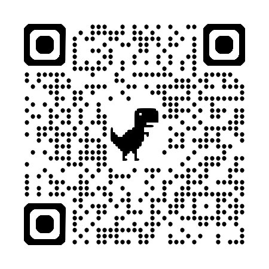
Our Group
Emily K. Roberts
University of Iowa
Belinda L. Needham
University of Michigan
Tyler H. McCormick
University of Washington
Fan Li
Yale University
 Bhramar Mukherjee
Bhramar Mukherjee
Yale University
Xu Shi
University of Michigan
Background
What are Telomeres?
Regions of DNA on chromosomes that protect genomic stability
Telomeres Shorten As Cells Divide
Shorter length associated with cardiometabolic outcomes
Relationship with Race and SES
Longer telomeres in Black individuals has been described as a paradox
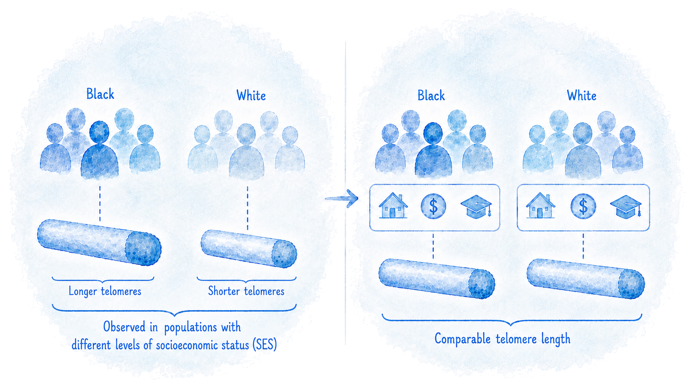
Motivation
Which is a Meaningful Health Policy Question?
Descriptive Comparison
How different is mean telomere length between Black and White adults in the United States?
vs.
Controlled Comparison
With balanced socioeconomic factors and a nationally representative sample, would the difference remain?
Note: This is not a causal effect as race is not ‘manipulable.’ This is a controlled comparison after balancing socioeconomic conditions.
Motivating Question
If we could hypothetically balance SES between Black and White individuals in a nationally representative sample, would we still see significant Black/White differences in telomere length?
What is Our Nationally Representative Sample?
National Health and Nutrition Examination Survey
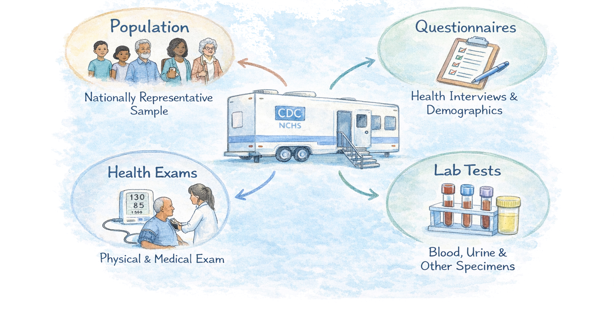
NHANES Stratified, Clustered Sampling Design
Primary sampling units (counties) and demographic-specific strata
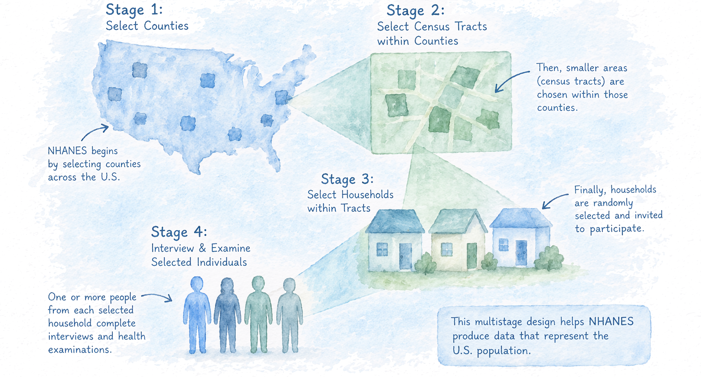
Why does This Make Our Question Challenging?
Two potential sources of bias
- Confounding: Race is associated with both SES and telomere length, and SES is associated with telomere length
- Selection: NHANES intentionally oversamples based (in part) on race and SES
Notation
Survey of \(n\) participants from a population of \(N\) individuals
- \(\class{highlight-prop}{\ A\ }\): Race (\(1=\) Black, \(0=\) White)
- \(\class{highlight-gray}{\ \boldsymbol{X}\ }\): Covariates (SES)
- \(\class{highlight-green}{\ Y\ }\): Outcome (log Telomere Length)
- \(\class{highlight-selection}{\ S\ }\): Sample Selection Indicator
- \(P\): Population distribution of \((\class{highlight-prop}{A},\ \class{highlight-gray}{\boldsymbol{X}},\ \class{highlight-green}{Y})\)
- \(Q\): Sample distribution given \(\class{highlight-selection}{S = 1}\)
If selection depends on both \(\class{highlight-prop}{\ A\ }\) and \(\class{highlight-gray}{\ \boldsymbol{X}\ }\), the final estimand requires a coherent factorization of the selection and group membership probabilities
What is Being Balanced/Weighted?
Within-Sample Covariate Balance
Use a propensity score for group membership:
\[\class{highlight-prop}{e_a(\boldsymbol{X})} = \Pr(\class{highlight-prop}{A = a} \mid\ \class{highlight-gray}{\boldsymbol{X}})\]
Purpose: Make covariate distributions comparable between groups.
Population Generalizability
Use the selection mechanism (e.g., survey weights):
\[\class{highlight-selection}{\pi(A, \boldsymbol{X})} = \Pr(\class{highlight-selection}{S=1} \mid\ \class{highlight-prop}{A},\ \class{highlight-gray}{\boldsymbol{X}})\]
Purpose: Weight the sample to the target population.
Questions:
- How do we incorporate these propensity and/or survey weights?
- Do we survey weight the propensity model?
Answer:
It depends on the design and how we factorize this joint probability
\[\Pr(\class{highlight-selection}{S=1},\ \class{highlight-prop}{A=a} \mid\ \class{highlight-gray}{\boldsymbol{X}})\]
Factorization 1
\[\Pr(\class{highlight-prop}{A=a} \mid\ \class{highlight-gray}{\boldsymbol{X}}) \times \Pr(\class{highlight-selection}{S=1} \mid\ \class{highlight-prop}{A=a},\ \class{highlight-gray}{\boldsymbol{X}})\] \[=\ \class{highlight-prop}{e_a^{P}(\boldsymbol{X})} \times\ \class{highlight-selection}{\pi(A, \boldsymbol{X})}\]
Population (Survey-Weighted) Propensity Score \(\times\) Group-Specific Selection Probability
Factorization 2
\[\Pr(\class{highlight-prop}{A=a} \mid\ \class{highlight-gray}{\boldsymbol{X}},\ \class{highlight-selection}{S=1}) \times \Pr(\class{highlight-selection}{S=1} \mid\ \class{highlight-gray}{\boldsymbol{X}})\]
\[=\ \class{highlight-prop}{e_a^{Q}(\boldsymbol{X})} \times\ \class{highlight-selection}{\pi(\boldsymbol{X})}\]
Within-Sample Propensity Score \(\times\) Marginalized Selection Probability
Estimation
Target of Inference
The average controlled difference (ACD) in telomere length
For group level \(a \in \{0,1\}\):
\[\mu(a) = \mathbb{E}_{P}\left[\mathbb{E}(\class{highlight-green}{Y} \mid\ \class{highlight-prop}{A = a},\ \class{highlight-gray}{\boldsymbol{X}})\right]\]
The population-standardized, covariate-balanced difference in mean telomere length between Black and White individuals
\[\text{ACD} = \mu(1) - \mu(0)\]
Four Proposed Estimators
Inverse Probability Weighting with Factorization 1
Use a population propensity and group-specific selection weight
\[\hat{\mu}_{IPW1}(a) = \frac{1}{n}\sum_{i=1}^n \frac{\class{highlight-prop}{I(A_i=a)}}{\class{highlight-prop}{\hat{e}_a^P(\boldsymbol{X}_i)}} \times\ \class{highlight-green}{Y_i} \times \frac{\class{highlight-selection}{\Pr(S = 1)}}{\class{highlight-selection}{\pi(A_i, \boldsymbol{X}_i)}}\]
Inverse Probability Weighting with Factorization 2
Use a within-sample propensity and marginalized selection weight
\[\hat{\mu}_{IPW2}(a) = \frac{1}{n}\sum_{i=1}^n \frac{\class{highlight-prop}{I(A_i=a)}}{\class{highlight-prop}{\hat{e}_a^Q(\boldsymbol{X}_i)}} \times\ \class{highlight-green}{Y_i} \times \frac{\class{highlight-selection}{\Pr(S = 1)}}{\class{highlight-selection}{\pi(\boldsymbol{X}_i)}}\]
Four Proposed Estimators
Outcome Modeling (G-Formula)
Directly model \(\mathbb{E}(Y \mid A, \boldsymbol{X}, S=1)\), then standardize to the population
\[\hat\mu_{OM}(a) = \frac{1}{n}\sum_{i=1}^n \class{highlight-green}{\hat{g}_a(\boldsymbol{X}_i)}\times \frac{\class{highlight-selection}{\Pr(S = 1)}}{\class{highlight-selection}{\pi(\boldsymbol{X}_i)}}\]
AIPW / Doubly Robust
Combine outcome modeling with inverse probability weighting
\[\hat{\mu}_{AIPW}(a) = \frac{1}{n}\sum_i \frac{\class{highlight-selection}{\Pr(S = 1)}}{\class{highlight-selection}{\pi(\boldsymbol{X}_i)}}\times \left[\frac{\class{highlight-prop}{I(A_i=a)}}{\class{highlight-prop}{\hat{e}_a^Q(\boldsymbol{X}_i)}} \class{highlight-green}{\{Y_i - \hat g_a(X_i)\}+\hat{g}_a(X_i)}\right]\]
Simulations
How do Existing Methods Compare?
| Method | Addressing Confounding? | Addressing Selection? |
|---|---|---|
| Existing Approaches | ||
| Simple Regression | No | No |
| Multiple Regression | Partial | No |
| IPTW Estimator | Yes | No |
| Survey-Weighted Multiple Regression | Partial | Yes |
| IPTW Multiple Regression | Yes | No |
| IPTW + Survey-Weighted Multiple Regression | Yes | Yes |
| Weighted IPTW + Survey-Weighted Multiple Regression | Yes | Yes |
| Proposed Approaches | ||
| Outcome Modeling and Direct Standardization | Yes | Yes |
| Inverse Probability Weighting 1 | Yes | Yes |
| Inverse Probability Weighting 2 | Yes | Yes |
| Augmented Inverse Probability Weighting | Yes | Yes |
Among existing methods that address both, there is still a possibility for bias if the weights are incorrectly specified
Simulation Results
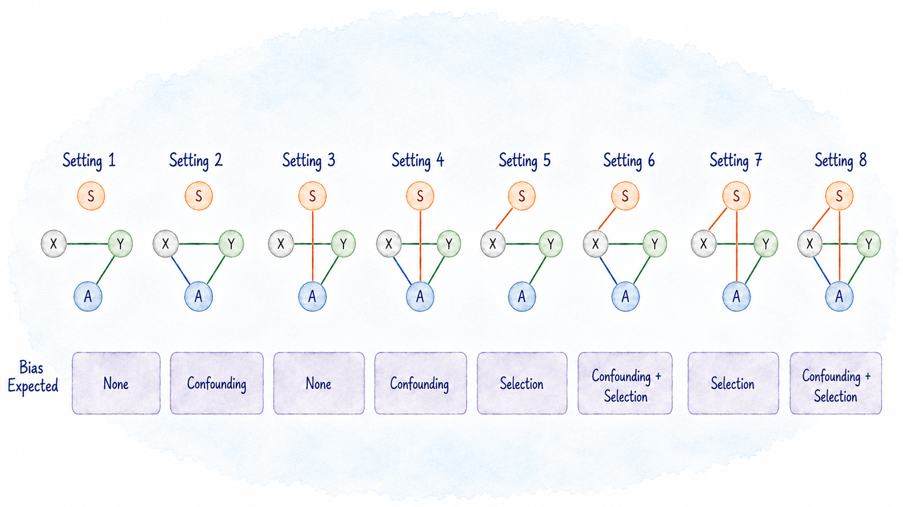
- Settings 1 + 3: All methods perform comparably for bias, MSE, and coverage
- Settings 2 + 4: Methods that appropriately adjust for \(A\) and \(\boldsymbol{X}\) perform well
- Settings 5 + 7: Not survey weighting results in bias and poor coverage
- Settings 6 + 8: Proposed estimators outperform current approaches
Simulation Takeaways
- Methods that address only confounding or only selection can be biased
- Methods that ignore the clustered survey design can understate uncertainty
- Proposed approaches best align the target, weights, and variance calculation
Race, SES, and Telomere Length
NHANES Analysis
Data
- NHANES 1999–2002
- Non-Hispanic Black and White Participants
- Analytic Sample: \(n=5{,}270\)
- Outcome: log Telomere Length Ratio
Adjustment Set
Age, Sex, Blood Composition
12 Socioeconomic Indicators: PIR, Education, Income, Home Ownership, Food Security, Insurance, WIC, Household Size, Home Type, Marital Status, Occupation, and Employment
Used nhanesA to extract data:
Outcome and Covariate Imbalance
Telomere Length
Median T/S Ratio:
- White: 0.98
- Black: 1.05
SES Imbalance
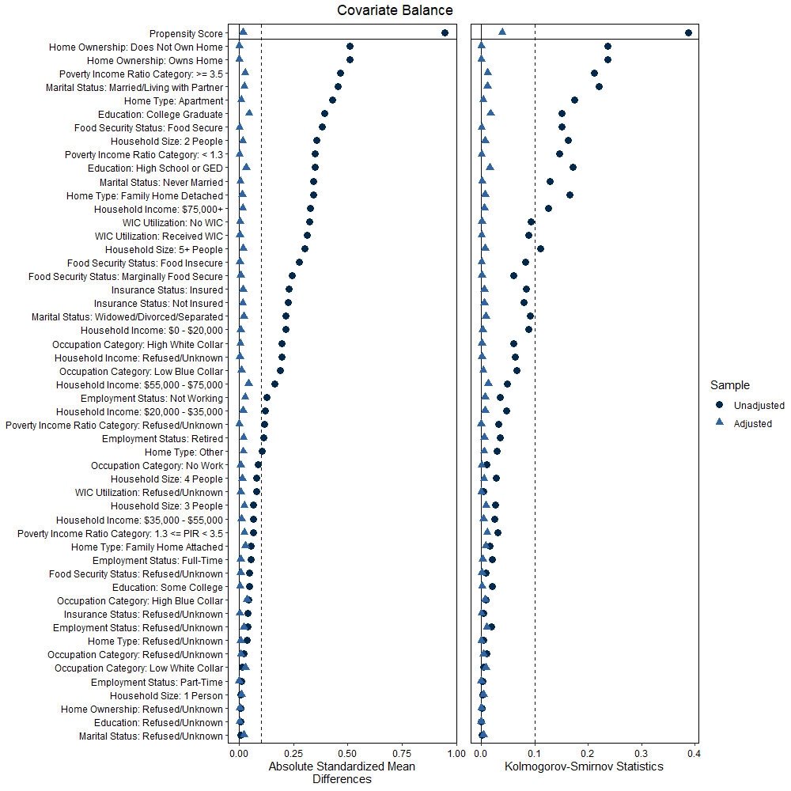
Estimated Disparity Attenuates After Accounting for SES and Survey Design
- Estimates attenuate as we make appropriate adjustments for sources of bias
- Linear regression: ACD estimate of 0.0265, 95% CI: 0.0106–0.0423
- Proposed approaches: 0.0132 to 0.0176, CI’s cover 0
- Results suggest a confounding relationship between SES and race
- Methods respecting design have appropriate standard errors
Some Practical Considerations
Which Approach to Use?
Planning Similar Analyses
- Start by naming the estimand (e.g., ACD)
- Draw a conceptual diagram before choosing an analytic approach
- Diagnose covariate balance and propensity overlap
- Use a doubly robust estimator when both outcome and propensity models are plausible but imperfect
- Use variance estimation that respects the survey design
Some Conclusions
For controlled comparisons, different weights play different roles:
- Survey weights support generalizability
- Propensity scores support covariate balance
When race, SES, and selection are intertwined, standard approaches might not be appropriate
NHANES is a uniquely valuable resource for policy-relevant disparities research because it combines national representativeness, rich socioeconomic measures, and biological outcomes
But valid inference requires aligning the target estimand, adjustment strategy, and experimental design!
Thank You!
These Slides
Paper
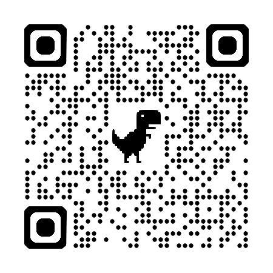
svycdiff
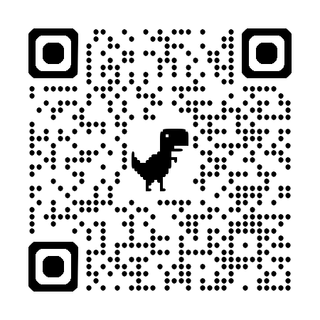
PSweight
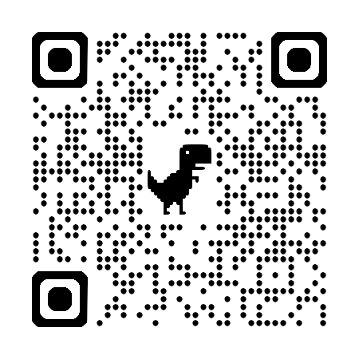
AI Attribution: All illustrations generated by GPT 5.5
Appendix
Inference
- Inference can be carried out analytically via Taylor expansion
- Alternatively, use numerical estimation via general M-estimation theory
ACD versus PATE
Assumptions
To estimate the ACD, we assume:
- Positivity: \(P(A=a \mid X=x)>0\) for every \(a\) and every \(x\) with support
- Selection positivity: \(P(S=1 \mid A=a, X=x)>0\) for every supported \(a,x\)
- Weak selection exchangeability: \(E[Y \mid A=a, X] = E[Y \mid A=a, S=1, X]\)
To target population potential outcome means, \(E[Y^a]\), stronger assumptions are required
SRMS & HPSS Webinar: INTERSECTIONS - NHANES - Perspectives of Survey Methodology and Health Policy